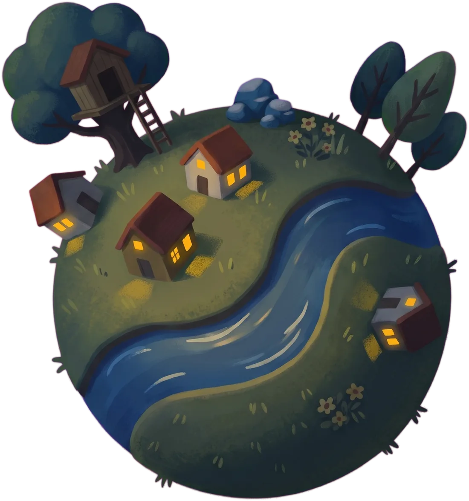

Le problème
Sur la tablette, la plupart des jeux sont faits pour qu'on ne la lâche pas.
Les hameçons habituels
- Une pub entre deux niveaux.
- Quelque chose à acheter, « juste une fois ».
- « Reviens demain », sinon la série est perdue.
- Des niveaux qui ne finissent jamais.
Et le soir, il faut se fâcher pour l'éteindre.
Ludiworld part de l'autre bout : peu de jeux, choisis par vous, et une fin prévue d'avance.
Comment ça marche
Une journée, le long du soleil
Le temps de jeu, c'est le soleil qui traverse le ciel. Votre enfant le voit descendre, sans avoir à lire l'heure.
-
Matin
Le parent prépare
Le côté parent s'ouvre avec votre code. Il a quatre onglets :
- Mes jeux
- Tous les jeux
- Temps
- Réglages
Dans Mes jeux : le temps joué aujourd'hui, et ses jeux, avec une limite par jour pour chacun si vous voulez. Dans Tous les jeux : tout le catalogue, à installer d'un geste. Dans Temps : un temps pour les jours que vous choisissez (le mercredi et le week-end, par exemple), un autre pour les autres jours.
-
Après-midi
L'enfant joue
Il joue aux jeux que vous avez choisis. Il peut regarder les autres et vous en demander un : rien ne s'installe sans vous.
Pendant qu'il joue, le soleil descend dans le ciel. Il sait où il en est d'un coup d'œil.
-
Soir
On s'arrête, sans surprise
Cinq minutes avant la fin, la marmotte baille. Vous choisissez comment ça finit :
- Fin douce
- attend la fin de la course ou du niveau en cours, pour les jeux qui le permettent.
- Fin nette
- s'arrête à la minute près.
Puis l'île s'endort. Pour aujourd'hui, c'est fini.
Les jeux
Peu de jeux, et chacun dit la vérité.
Chaque jeu a une fiche honnête : l'âge, ce qu'on y apprend, la durée d'une partie. Même quand c'est moins flatteur. Touchez un jeu pour la lire.
Les fiches arrivent…
La charte
Des jeux pensés pour faire du bien aux enfants
Ludiworld est gratuit pour l'instant.
- Le jeu, et rien d'autre : ni pub, ni achat.
- Autour de l'enfant, seulement sa famille : aucun inconnu ne lui parle.
- Il revient quand il en a envie : ni récompense au hasard, ni « reviens demain », ni notification.
- Il peut s'arrêter sans rien perdre.
- Le parent choisit les jeux et le temps de jeu.
Ludiworld garde des données d'usage pour s'améliorer. Elles ne sont jamais vendues.
Ludiworld aime bien
Apprendre peut être fun, même loin des jeux.
Des séries, des films et des applis qui rendent curieux, choisis par des parents. Pour que le temps d'écran ait du sens, même quand ce n'est pas l'heure de jouer.

L'île dort. Elle se réveille quand vous l'ouvrez.
Ouvrir LudiworldSur la tablette, ouvrez Ludiworld, puis le menu du navigateur, et choisissez « Ajouter à l'écran d'accueil » : Ludiworld s'ouvre alors comme une app.